Contents
Hw5
Teacher : Dr.Emadi Author: [SeyedAli] - [SeyedHosseini] E-mail: [alishosseini79@aut.ac.ir]
%Student-Number : [9723042] % University: Amirkabir University of Technology
clear recent data
clc;
close all;
clear ;
Initialization
N = 1e5 ; % # of bits data = randi(2,[1 , N]) - 1 ; % random Numbers between 1 and 2 step = 0.1; % Intervals for Eb/N0 EbN0 = 0 : step : 13 ; % Eb / N0 sequence E = 2*10.^(EbN0/10); %Energy for each EbN0 E = E' ; M = 10 ; % Sample per Symbol (SPS)
BPSK
clc;
[bpsk_optimum, bpsk_theory, bpsk_unideal] = BPSK(N, data, E, M); %Function We defined
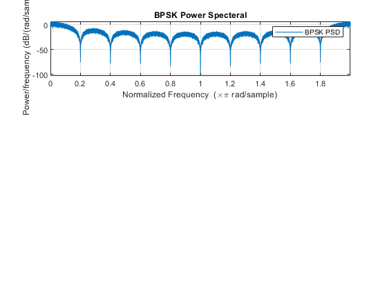 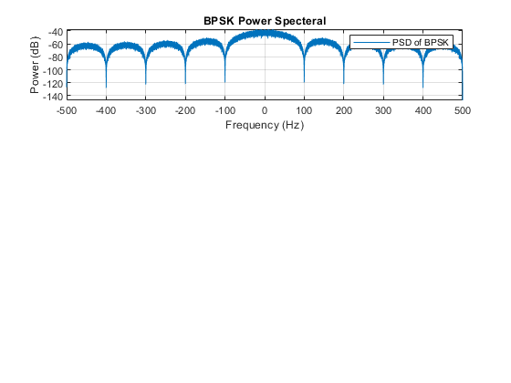 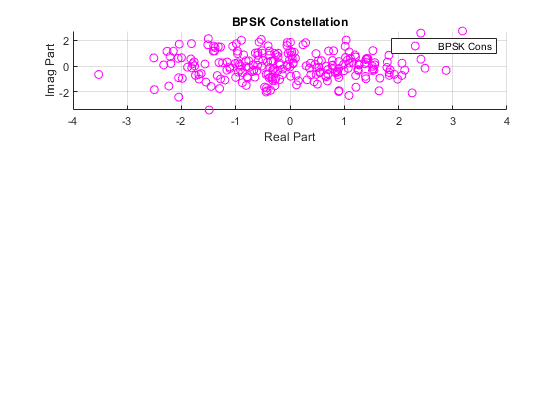 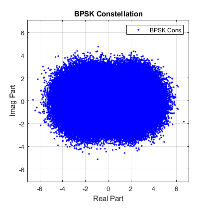 BPSK Plot
clc; figure(11) semilogy(EbN0,bpsk_optimum,"-- r");hold on; semilogy(EbN0,bpsk_theory,"-. b");hold on; semilogy(EbN0,bpsk_unideal,"- g"); title("BER") legend('Optimum bpsk' , 'Theory BPSK','UnIdeal BPSK') legend('Location','southwest') xlabel('EbN0') ylabel('Pe') grid ('Minor');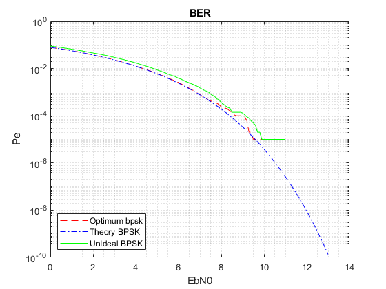
OOK2
clc; [ook_optimum, ook_theory] = OOK2(N, data, E, M);
OOK
[ook_optimum, ook_theory, ook_unideal] = OOK(N, data, E, M);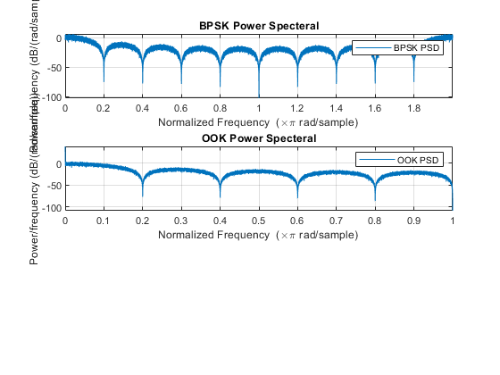 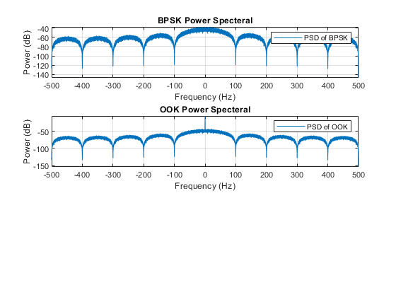 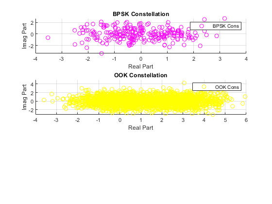 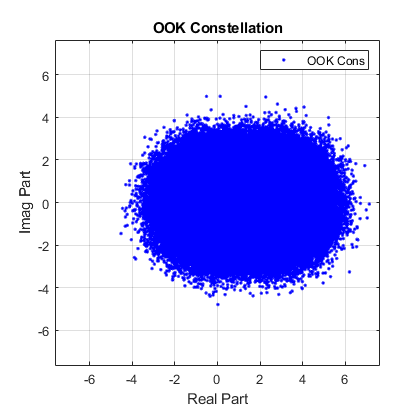
Plotting OOK
figure(12) semilogy(EbN0,ook_optimum,"+ r");hold on; semilogy(EbN0,ook_theory,"* b"); semilogy(EbN0,ook_unideal,"x g"); title("BER") legend('Optimum OOK' , 'Theory OOK','Unideal OOK') legend('Location','southwest') xlabel('EbN0') ylabel('Pe') grid ('Minor');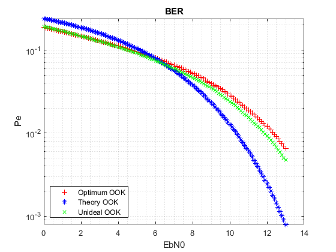
Binary Orthogonal
[Bin_Or_optimum, Bin_Or_theory, Bin_Or_unideal] = Bin_Or(N, data, E, M);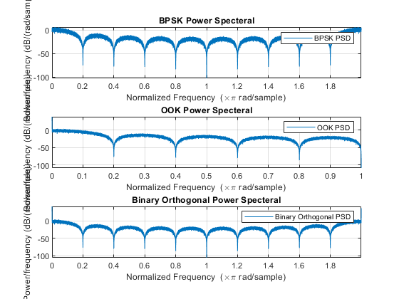 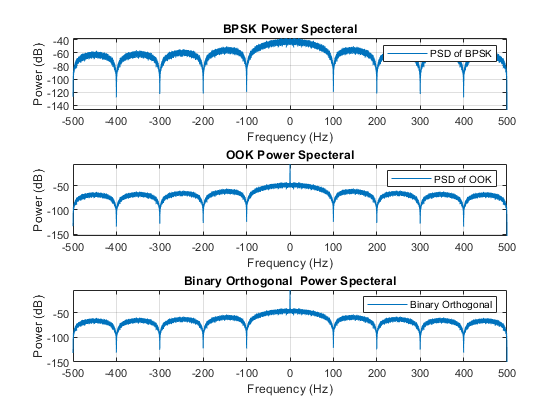 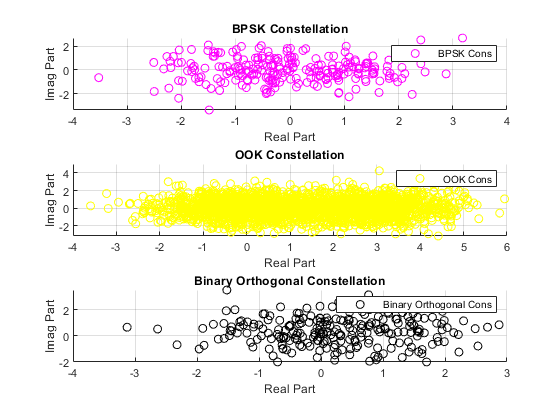 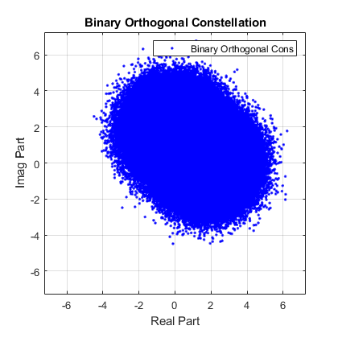
Plotting Binary_Orthogonal
figure(13) semilogy(EbN0,Bin_Or_optimum,"s r");hold on; semilogy(EbN0,Bin_Or_theory,"d b"); semilogy(EbN0,Bin_Or_unideal,"o g"); title("BER") legend('Optimum Orthogonal' , 'Theory Orthogonal','Unideal Orthogonal') legend('Location','southwest') xlabel('EbN0') ylabel('Pe') grid ('Minor');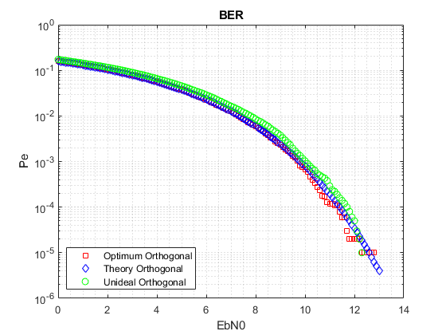
Plotting All of them
figure(14) semilogy(EbN0,bpsk_optimum,"-- r");hold on; semilogy(EbN0,bpsk_theory,"-. b");hold on; semilogy(EbN0,bpsk_unideal,"- g");hold on; semilogy(EbN0,ook_optimum,"+ r");hold on; semilogy(EbN0,ook_theory,"* b");hold on; semilogy(EbN0,ook_unideal,"x g");hold on; semilogy(EbN0,Bin_Or_optimum,"s r");hold on; semilogy(EbN0,Bin_Or_theory,"d b");hold on; semilogy(EbN0,Bin_Or_unideal,"o g");hold on; title("BER") legend('Optimum bpsk' , 'Theory BPSK','UnIdeal BPSK','Optimum OOK' ,... 'Theory OOK','Unideal OOK','Optimum Orthogonal' , 'Theory Orthogonal'... ,'Unideal Orthogonal') legend('Location','southwest') xlabel('EbN0') ylabel('Pe') grid ('Minor');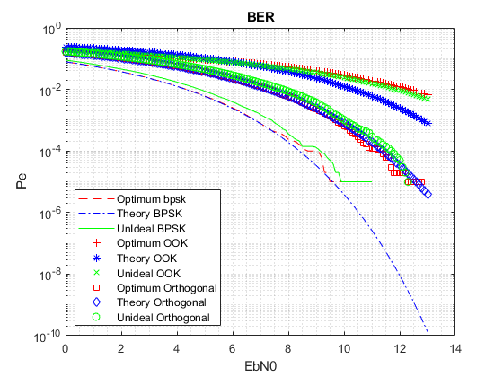